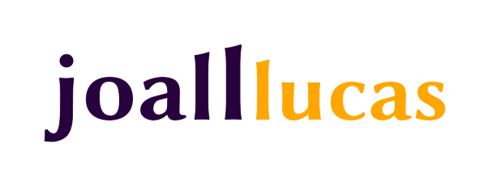

Nordestino que programa e marca páginas por hobby nas horas vagas e é completamente apaixonado por música, tecnologia e videogames. Entusiasta do movimento de software livre e usuário de inovações que compartilham de seus ideais.
Se quiser saber o que eu estou ouvindo, confira o Spotify ou Last.fm. Além disso, entre também no Steam para conferir meus títulos ou jogar algum deles comigo.
Esse projeto foi executado em 2016 e consistia em um sistema codificado em PHP utilizando a metodologia ágil de desenvolvimento de software. Seu objetivo era agilizar o processo de contratação de funcionários pela empresa, bem como tornar a administração pelo setor de recursos humanos mais prática e direta com os trabalhadores.
O sistema foi desenvolvido dentro da disciplina de Desenvolvimento de Software e, posteriormente, usado como Trabalho de Conclusão de Curso (TCC) para os envolvidos na codificação.
O SAGA foi um projeto de pesquisa idealizado e desenvolvido individualmente por Joao Lucas que também foi aproveitado como trabalho de conclusão do Curso Técnico em Informática do IFRN, tendo sido codificado em Python.
O sistema foi idealizado com base na demanda acadêmica percebida nos estudantes do Campus Mossoró e buscava auxiliar na administração de horários de estudo. O programa, utilizando a API de desenvolvimento do Sistema Unificado de Administração Pública (SUAP), analisava as disciplinas nas quais os estudantes apresentavam situação mais crítica com base em suas notas. Assim, era criada uma prioridade de estudos para os alunos, focando nas matérias mais necessitadas.
É possível conferir, na íntegra, toda a justificativa e ferramentas usadas no desenvolvimento em seu arquivo de trabalho e em sua apresentação de defesa para a banca de professores.
O Curso de Informática do IFRN, embora possua uma metodologia ampla nos conceitos computacionais, abordando tanto manutenção, redes e sistemas operacionais, possui o foco principal no desenvolvimento de software. Sendo assim, o aluno formado por esse curso tem como principal habilidade o desenvolvimento de programas e páginas web, mas sem deixar de possuir conhecimentos sobre outras áreas.
O Curso de Medicina da UERN está sediado na cidade de Mossoró, no interior do Rio Grande do Norte. Com isso, ele é de grande importância para a promoção de saúde nessa região do estado, haja vista que está localizado na sua segunda maior cidade e tem as atividades focadas no Hospital Regional Tarcísio Maia (HRTM), que também contempla os municípios circunvizinhos.
